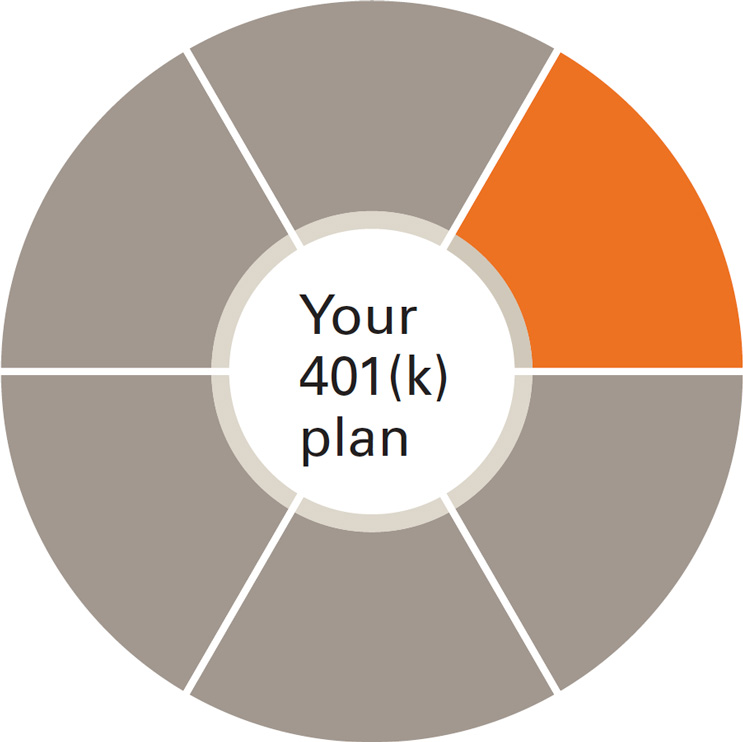
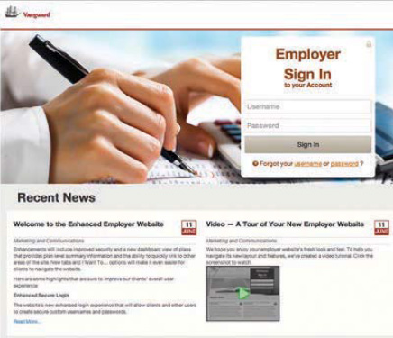

---
---
<div class="vanguard-plan">
  <section class="vanguard-mar-b-more">
    <div class="vanguard-headline-container vanguard-mar-b">
      
      <h2>Plan administration</h2>
    </div>
    <h1>You run your business—we’ll run your retirement plan</h1>
    <p>Rely on Vanguard Retirement Plan Access and your assigned team to help simplify plan administration.</p>
    <p>Using a service model that champions specialized expertise, Vanguard Retirement Plan Access offers the support you need for all aspects of running a plan.</p>
    <p class="vanguard-mar-b-none">Services include:</p>
    <ul>
      <li>IRS Form 1099-R preparation and support.</li>
      <li>Census data updates via the sponsor website.</li>
      <li>Payroll provider integration.</li>
      <li>Payroll monitoring.</li>
      <li>Contribution processing.</li>
      <li>Online loan processing.</li>
    </ul>
  </section>
  <section>
    <div class="grid">
      <div class="unit two-fifths">
        
      </div>
      <div class="unit three-fifths">
        <p>Your dedicated plan sponsor website, SponsorInsight™, makes it possible for you to stay as involved as you want in the day-to-day oversight of your plan—with real-time access to participant and plan information. With a user-friendly dashboard, you can easily tend to plan administration, access key reports, and view educational content.</p>
        <p><a href="https://sponsor.vanguardplan.com">https://sponsor.vanguardplan.com</a></p>
      </div>
    </div>
  </section>
</div>